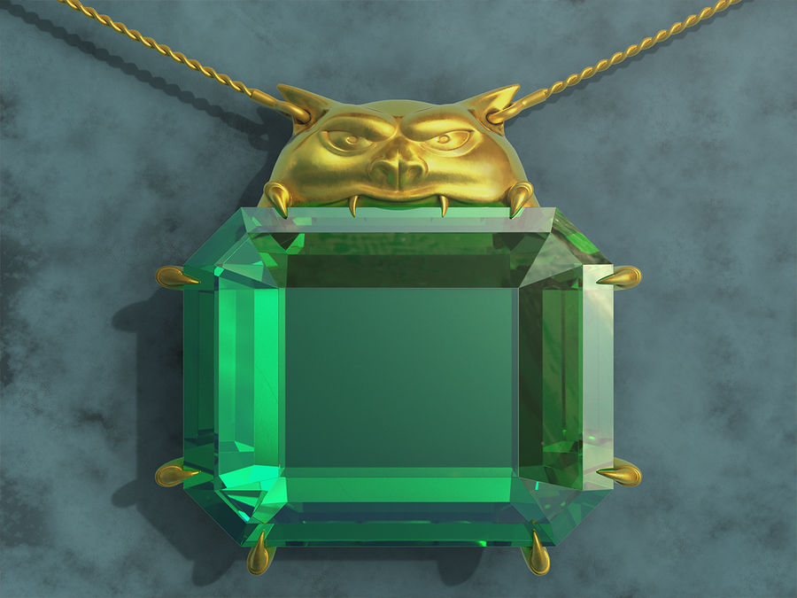

Mox Emerald
Mox Emerald génère un mana vert, essentiel pour les stratégies basées sur des créatures de grande taille et des sorts qui influencent les terrains. Le mana vert est souvent associé à la croissance et à la nature, et Mox Emerald permet aux joueurs de développer rapidement leur présence sur le terrain. L'illustration de l'émeraude lumineuse sur la carte reflète la vitalité et la force de la nature.